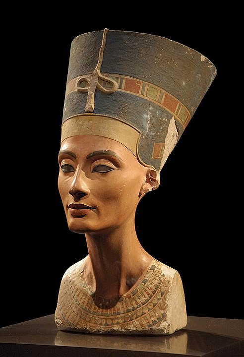
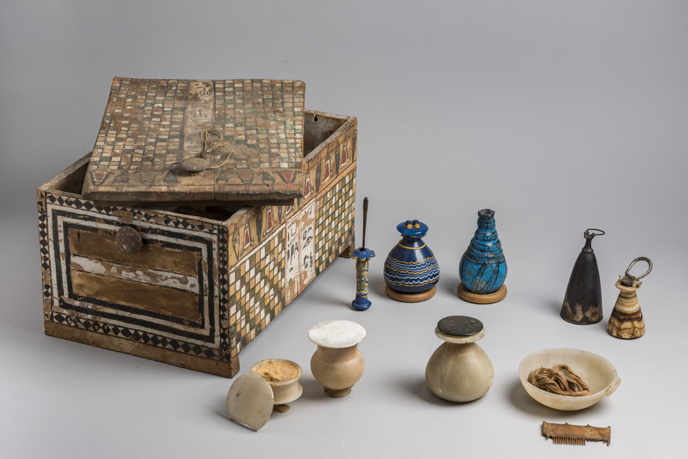
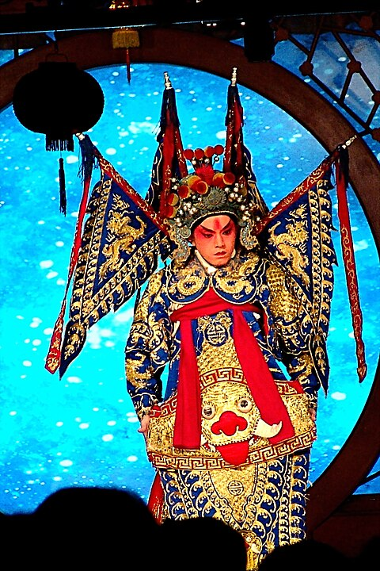
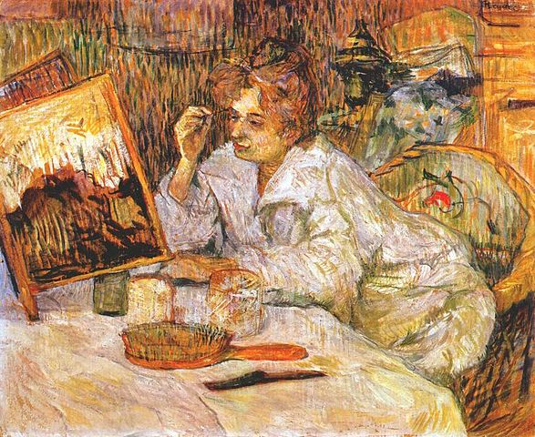
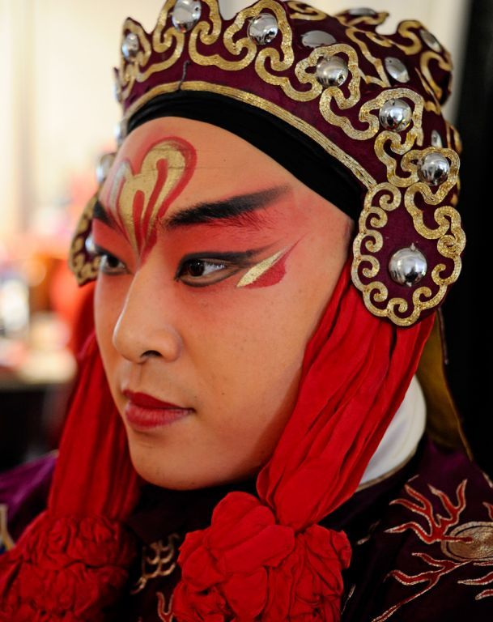

HISTORY OF COSMETICS
From Wikipedia, the free encyclopedia
Nefertiti bust with eye liner applied ~1,320 BC (~3,300 years ago).
The history of cosmetics spans at least 7,000 years and is present in almost every society on earth. Cosmetic body art is argued to have been the earliest form of a ritual in human culture. The evidence for this comes in the form of utilised red mineral pigments (red ochre) including crayons associated with the emergence of Homo sapiens in Africa. [1][2][3][4][5][6] Cosmetics are mentioned in the Old Testament—2 Kings 9:30 where Jezebel painted her eyelids—approximately 840 BC—and the book of Esther describes various beauty treatments as well. Cosmetics were also used in ancient Rome, although much of Roman literature suggests that it was frowned upon. It is known that some women in ancient Rome invented make up including lead-based formulas, to whiten the skin, and kohl to line the eyes.[7]
AFRICA
Egypt
One of the earliest cultures to use cosmetics was ancient Egypt, where both Egyptian men and women used makeup to enhance their appearance. The first cosmetics appeared 5,000 years ago in Egypt. To achieve a pleasant smell and softness of the skin, incense oils were used, and women applied white to protect their faces from the sun. The Egyptians were also the first to use black antimony-based paint as eyeliner. And to create a natural blush, crushed flowers were used.[8]
Ancient Egypt beauty box, with accessories including a kohl tube
The use of cosmetics in Ancient Egypt is well documented. Kohl has its roots in north Africa. The use of black kohl eyeliner and eyeshadows in dark colours such as blue, red, and black was common, and was commonly recorded and represented in Egyptian art, as well as being seen in Egyptian hieroglyphs. Ancient Egyptians also extracted red dye from fucus-algin, 0.01% iodine, and some bromine mannite, [vague] but this dye resulted in serious illness. Lipsticks with shimmering effects were initially made using a pearlescent substance found in fish scales, which are still used extensively today.[9] Despite the hazardous nature of some Egyptian cosmetics, ancient Egyptian makeup was also thought to have antibacterial properties that helped prevent infections.[10] Remedies to treat wrinkles contained ingredients such as gum of frankincense and fresh moringa. For scars and burns, a special ointment was made of red ochre, kohl, and sycamore juice. An alternative treatment was a poultice of carob grounds and honey, or an ointment made of knotgrass and powdered root of wormwood. To improve breath the ancient Egyptians chewed herbs or frankincense which is still in use today. Jars of what could be compared with setting lotion have been found to contain a mixture of beeswax and resin. These doubled as remedies for problems such as baldness and greying hair. They also used these products on their mummies, because they believed that it would make them irresistible in the after life.
ASIA
CHINA
Flowers play an important decorative role in China. Legend has it that once on the 7th day of the 1st lunar month, while Princess Shouyang, daughter of Emperor Wu of Liu Song, was resting under the eaves of Hanzhang Palace near the plum trees after wandering in the gardens, a plum blossom drifted down onto her fair face, leaving a floral imprint on her forehead that enhanced her beauty further. [20][21][22] The court ladies were said to be so impressed, that they started decorating their own foreheads with a small delicate plum blossom design. [20][21][23] This is also the mythical origin of the floral fashion, meihua zhuang[21] (梅花妝; literally “plum blossom makeup”), that originated in the Southern dynasties (420–589) and became popular amongst ladies in the Tang (618–907) and Song (960–1279) dynasties.[23][24]
A Beijing opera performer with traditional stage make up.
EUROPE
Cultures to use cosmetics include the ancient Greeks[5] [6] and the Romans. In the Roman Empire, the use of cosmetics was common amongst prostitutes and rich women. Such adornment was sometimes lamented by certain Roman writers, who thought it to be against the castitas required of women by what they considered traditional Roman values; and later by Christian writers who expressed similar sentiments in a slightly different context. Pliny the Elder mentioned cosmetics in his Naturalis Historia, and Ovid wrote a book on the topic. Pale faces were a trend during the European Middle Ages. In the 16th century, women would bleed themselves to achieve pale skin. Spanish prostitutes wore pink makeup to contrast pale skin. [citation needed] 13th century Italian women wore red lipstick to show that they were upper class.[26] Use of cosmetics continued in Middle Ages, where the face was whitened and the cheeks rouged;[27] during the later 16th century in the West, the personal attributes of the women who used makeup created a demand for the product among the upper class. [vague][27] Cosmetics continued to be used in the following centuries, though attitudes towards cosmetics varied throughout time, with the use of cosmetics being openly frowned upon at many points in Western history. In the 19th century, Queen Victoria publicly declared makeup improper, vulgar, and acceptable only for use by actors,[28] with many famous actresses of the time, such as Sarah Bernhardt and Lillie Langtry using makeup.
1889 painting Woman at her Toilette by Henri de Toulouse-Lautrec.
THROUGH THE CENTURIES
19TH CENTURY
During the late 1800s, the Western cosmetics industry began to grow due to a rise in “visual self-awareness”, a shift in the perception of color cosmetics, and improvements in the safety of products.[31] Prior to the 19th century, limitations in lighting technology and access to reflective devices stifled people’s ability to regularly perceive their appearance. This, in turn, limited the need for a cosmetic market and resulted in individuals creating and applying their own products at home. Several technological advancements in the latter half of the century, including the innovation of mirrors, commercial photography, marketing and electricity in the home and in public, increased consciousness of one’s appearance and created a demand for cosmetic products that improved one’s image.[31]

Soft Victorian make-up on woman
MEN IN MAKEUP
Men have had a long history with cosmetics, and have been beautifying since 50,000 BCE. [citation needed] In the 1970s, male musicians began to use makeup onstage. This included famous rock stars such as David Bowie, Alice Cooper, and the band Kiss. The use of cosmetics allowed them to create an alter ego, and were part of the visual entertainment of their shows. Currently, the popularity of TikTok has created a rise in men’s cosmetics. Some men have chosen to wear nail polish, makeup, and other cosmetics to express their identity online.
Elegant Traditional Chinese Male Makeup